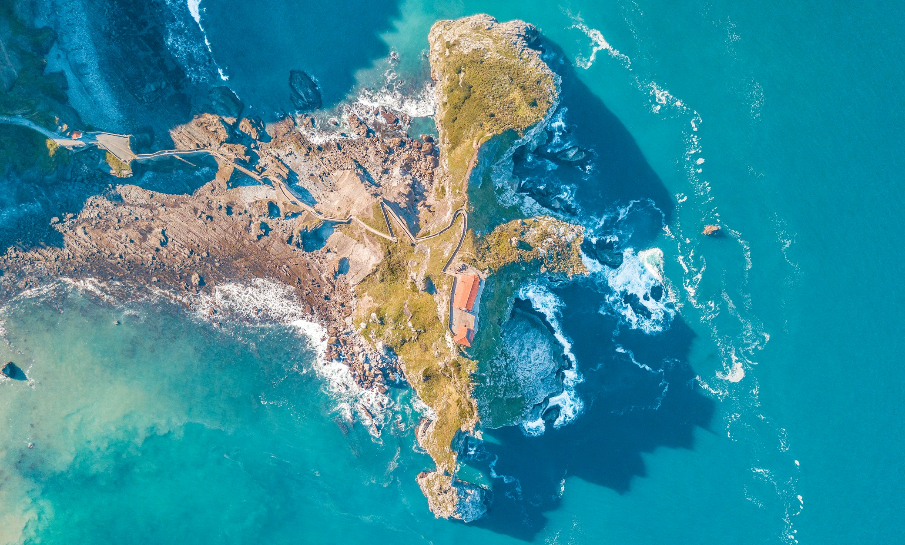

Study, Visit & Immigrate: The Ultimate Guide to Canada for Bangladeshis
Study, Visit & Immigrate: বাংলাদেশীদের জন্য কানাডার সম্পূর্ণ গাইড
The majestic Canadian Rockies in Alberta
🌟 Introduction
Canada is widely celebrated as one of the most welcoming, safe, and beautiful countries in the world. Stretching across the northern half of North America, it is a land of breathtaking diversity—both in its stunning landscapes, which range from the majestic Rocky Mountains to the rugged coastlines of the Maritimes, and in its vibrant, multicultural population.
For decades, Canada has been a top destination for Bangladeshi students, skilled professionals, and families seeking a high quality of life. Its policies are explicitly designed to embrace immigrants, making it easier than almost anywhere else to transition from temporary study or work into permanent residency and eventually citizenship.
The iconic Maple Leaf flag
🗺️ Country Overview
As the second-largest country in the world by total area, Canada consists of 10 provinces and 3 territories. Its capital is Ottawa, while major global cities like Toronto, Vancouver, and Montreal serve as economic and cultural hubs.
Canada is officially bilingual, with English and French as its two official languages, though English is predominant in most provinces except Quebec. The country's currency is the Canadian Dollar (CAD).
Because of its immense size, Canada experiences varied climates, but it is famous for its distinct four seasons, including cold, snowy winters and warm, beautiful summers. The commitment to a multicultural society ensures that immigrants from Bangladesh can seamlessly integrate while preserving their own rich heritage.
Parliament Hill in the capital city of Ottawa
📜 History
Canada's history stretches back thousands of years with its Indigenous peoples (First Nations, Inuit, and Métis), whose deep connection to the land forms the cornerstone of Canadian heritage. Later, French and British colonization shaped the early political landscape.
Canada peacefully transitioned into an independent nation, officially confederating in 1867. Modern Canadian history is characterized by a strong commitment to peace, human rights, and the historic 1971 declaration making Canada the world's first country to adopt multiculturalism as an official state policy.

Toronto, Canada's financial and economic center
📊 Economy & Economic Growth
Canada boasts a highly developed, mixed economy and is an active member of the G7. Its economy is deeply intertwined with that of the United States, facilitating massive cross-border trade.
Key drivers of the Canadian economy include its abundant natural resources (such as oil, gas, and timber), a robust manufacturing sector, and rapidly growing tech hubs in cities like Toronto, Vancouver, and Waterloo.
For professionals migrating from Bangladesh, the Canadian job market is highly favorable, particularly in IT, healthcare, engineering, nursing, and skilled trades. Salaries are highly competitive and accompanied by comprehensive workplace benefits.
Canada's strong democratic institutions
🏛️ Political Status & Government
Canada is a parliamentary democracy and a constitutional monarchy. King Charles III is the head of state, while an elected Prime Minister leads the federal government.
The political climate in Canada is incredibly stable, characterized by progressive social policies, universal healthcare, and a strong emphasis on equality and human rights. This robust legal framework ensures safety and security for international students and immigrants.
A multicultural society built on inclusivity
👨👩👧👦 Population & Demographics
Despite its massive landmass, Canada has a relatively small population of roughly 40 million people, heavily concentrated in urban centers near the southern border.
Because of its reliance on immigration for population growth, Canada is incredibly diverse. The Bangladeshi diaspora is large, well-established, and thriving, particularly in Toronto and Montreal. You will easily find Halal food, South Asian grocery chains, and vibrant cultural community centers throughout major Canadian cities.
World-renowned research universities and colleges
🎓 Education System
Canada's education system is globally revered, offering world-class universities like the University of Toronto, McGill University, and UBC. Alongside universities, Canada has a robust network of community colleges offering highly practical, job-oriented diplomas and post-graduate certificates.
Degrees and diplomas from Canada are recognized worldwide. Furthermore, compared to the US and UK, Canadian tuition fees are often more affordable, and the cost of living in smaller college towns is highly manageable for Bangladeshi students.
The pristine blue waters of Banff National Park
✈️ Tourism & Travel
Canada is a premier tourist destination for nature lovers and urban explorers alike. You can witness the spectacular Niagara Falls, ski the world-renowned slopes of Whistler, or explore the historic, European-style streets of Old Quebec.
The country's vast expanse of national parks, lakes, and mountains offers unparalleled opportunities for hiking, camping, and experiencing true wilderness, including the magical Northern Lights in the northern territories.
Canada offers a mix of urban luxury and natural wonders
🇧🇩 Why Bangladeshi People Should Visit
Securing a Canadian Temporary Resident Visa (Visitor Visa) opens up a world of exploration. For Bangladeshis, it is an incredible destination to visit family members who have immigrated, attend prestigious conferences, or simply take a vacation in a beautiful, highly developed, and remarkably safe environment.
A visitor visa also provides an excellent opportunity to explore Canadian university campuses in person or assess the job market and living conditions if you are considering a permanent move in the future.
Education in Canada is a direct pathway to permanent residency
🎓 Why Bangladeshis Should Study in Canada
Studying in Canada is perhaps the single most effective pathway for a Bangladeshi student to build a permanent life abroad. The education is top-tier, yet more cost-effective than its southern neighbor, the US.
International students can work part-time (20 hours per week) during their studies. The most significant advantage is the Post-Graduation Work Permit (PGWP), which allows graduates to work in Canada for up to three years after completing an eligible program. This Canadian work experience directly translates into highly required points for Canadian Permanent Residency (PR).
A welcoming society with free healthcare and education
🌍 Why Consider Immigrating to Canada
Canada sets annual immigration targets aiming to welcome hundreds of thousands of new permanent residents every year. The benefits of Canadian PR are phenomenal: access to free, world-class public healthcare, free public schooling for your children until the 12th grade, and the protection of the Canadian Charter of Rights and Freedoms.
As a permanent resident, you live and work anywhere in Canada, and after just three years of physical presence, you can apply for Canadian citizenship, securing one of the most powerful passports in the world.
Securing your Canada Visitor Visa
📋 How to Visit Canada from Bangladesh
To visit Canada, Bangladeshi citizens must apply for a Temporary Resident Visa (TRV) online through the IRCC portal. The key to a successful TRV application is proving strong ties to Bangladesh, ensuring the officer that you will return home after your visit.
You must supply comprehensive financial documents, including bank statements, income tax returns, and property valuations, alongside an invitation letter if you are visiting relatives, or a detailed travel itinerary if you are going for tourism.
Applying to Designated Learning Institutions (DLIs)
📚 How to Apply to Study
Your first step is to secure an acceptance letter from a Canadian Designated Learning Institution (DLI). Depending on the province, applying to colleges and universities may require specific credential evaluations.
Once accepted, you must apply for a Study Permit. This requires proving you have the funds to cover your first year of tuition plus $20,635 CAD for living expenses. Good academic standing and a strong IELTS score (usually 6.0 to 6.5 minimum) are vital for a successful application. Edu Abroad Limited helps you craft a compelling Statement of Purpose (SOP) to maximize visa approval chances.
Express Entry and Provincial Nominee Programs
🏠 How to Immigrate (PR Pathways)
The primary pathway for skilled workers outside Canada is to apply directly through the highly competitive Express Entry system. It awards points based on age, education, work experience, and language proficiency (IELTS).
If your Express Entry score is not high enough, the Provincial Nominee Programs (PNPs) offer alternative routes. Provinces like Saskatchewan, Alberta, and Ontario regularly nominate candidates with specific skills required in their local labor markets. Studying in Canada bypasses much of this difficulty, granting immense extra points towards your PR score.
Your trusted partner for Canadian admissions and visas
💬 How Edu Abroad Limited Can Help You
Canada's immigration and student visa laws are complex and frequently updated. A minor error can result in a refusal. Edu Abroad Limited offers end-to-end guidance, from selecting the right diploma or degree that perfectly aligns with PR demand, to submitting a flawless visa application.
We handle university admissions, ensure your documents meet IRCC standards, process GIC (Guaranteed Investment Certificate) setups, and offer pre-departure briefings. Our focus is long-term: we don't just send you to study; we chart your optimal path to Canadian Permanent Residency.
Answers to your top questions
❓ Frequently Asked Questions (FAQ)
Q: Which is better for PR, a university degree or a college diploma? A: While a university degree offers higher academic prestige, two-year college diplomas are highly popular among Bangladeshis because they are more affordable, intensely focused on market skills, and equally qualify you for a 3-year PGWP, making them an excellent PR pathway.
Q: How much does it cost to study in Canada? A: College diplomas usually cost between $15,000 to $20,000 CAD per year, whereas University degrees can range from $25,000 to over $40,000 CAD annually. It's crucial to prepare your finances accordingly.
Q: Can I take my spouse with me? A: With recent policy updates in 2024, open work permits are now primarily restricted to the spouses of students in Master's and Doctoral programs, rather than undergraduate or college diploma programs. We can advise you on your specific situation.
The majestic Canadian Rockies in Alberta
🌟 পরিচিতি
কানাডা বিশ্বব্যাপী অন্যতম সবচেয়ে স্বাগত জানানো, নিরাপদ এবং সুন্দর একটি দেশ হিসেবে সুপরিচিত। উত্তর আমেরিকার উত্তরাংশ জুড়ে বিস্তৃত এই দেশটি তার বৈচিত্র্যময় প্রাকৃতিক সৌন্দর্য যেমন— রকি পর্বতমালার রাজকীয় চূড়া থেকে শুরু করে আটলান্টিক উপকূলের সৌন্দর্য এবং বহুসংস্কৃতির জনসাধারণের জন্য বিখ্যাত।
কানাডা দীর্ঘকাল যাবৎ বাংলাদেশী শিক্ষার্থী, দক্ষ পেশাজীবী এবং উন্নত জীবনমানের সন্ধানে থাকা পরিবারগুলোর অন্যতম শীর্ষ গন্তব্য। দেশটির অভিবাসন নীতিগুলো খুব সহজ ও অভিবাসনবান্ধব হওয়ায় এখানে পড়াশোনা বা চাকরি থেকে খুব সহজেই স্থায়ী বসবাস (পিআর) এবং নাগরিকত্ব লাভ করা সম্ভব।
The iconic Maple Leaf flag
🗺️ দেশ সম্পর্কে ধারণা
আয়তনের দিক থেকে কানাডা বিশ্বের দ্বিতীয় বৃহত্তম দেশ, যা ১০টি প্রদেশ এবং ৩টি টেরিটরি নিয়ে গঠিত। এর রাজধানী অটোয়া, তবে টরোন্টো, ভ্যাঙ্কুভার এবং মন্ট্রিলের মতো শহরগুলো এর অর্থনীতি ও সংস্কৃতির প্রধান কেন্দ্র।
কানাডা দাপ্তরিকভাবে একটি দ্বিভাষিক দেশ— ইংরেজি এবং ফ্রেঞ্চ এর দুটি রাষ্ট্রভাষা। তবে কুইবেক ছাড়া অন্যান্য প্রায় সব প্রদেশেই ইংরেজির আধিপত্য বেশি। দেশটির মুদ্রার নাম কানাডিয়ান ডলার (CAD)।
বিশাল আয়তনের কারণে কানাডার আবহাওয়া ও জলবায়ু বেশ বৈচিত্র্যময়, তবে এটি মূলত তার চারটি স্পষ্ট ঋতু, বিশেষ করে বরফ ঢাকা শীতকাল এবং সুন্দর উষ্ণ গ্রীষ্মকালের জন্য বিখ্যাত। বহুজাতিক সংস্কৃতির প্রতি কানাডার এই প্রতিশ্রুতি বাংলাদেশ থেকে আসা অভিবাসীদের তাদের নিজ ঐতিহ্য বজায় রেখে এখানকার সমাজ ব্যবস্থার সাথে মানিয়ে নেওয়ার সুযোগ করে দেয়।
Parliament Hill in the capital city of Ottawa
📜 ইতিহাস
কানাডার ইতিহাস হাজার বছরের পুরোনো, যা শুরু হয়েছিল এর আদিবাসী বা ইনডিজেনাস পিপলস (ফার্স্ট নেশনস, ইনুইট এবং মেটিস) দিয়ে। এই মাটির সাথে তাদের গভীর সংযোগই কানাডিয়ান ঐতিহ্যের মূল ভিত্তি। কালক্রমে ফরাসি ও ব্রিটিশদের আগমন দেশটির প্রাথমিক রাজনৈতিক কাঠামো গঠন করে।
১৮৬৭ সালে কানাডা শান্তিপূর্ণ প্রক্রিয়ার মাধ্যমে কনফেডারেশনে যুক্ত হয়ে একটি স্বাধীন দেশে পরিণত হয়। আধুনিক কানাডার ইতিহাস শান্তি প্রতিষ্ঠা, মানবাধিকার রক্ষা এবং ১৯৭১ সালে পৃথিবীর প্রথম দেশ হিসেবে বহুসংস্কৃতিবাদকে (multiculturalism) রাষ্ট্রীয় নীতি হিসেবে গ্রহণের মাধ্যমে এক অনন্য দৃষ্টান্ত স্থাপন করেছে।
Toronto, Canada's financial and economic center
📊 অর্থনীতি ও অর্থনৈতিক প্রবৃদ্ধি
কানাডার অর্থনীতি একটি অত্যন্ত উন্নত, মিশ্র অর্থনীতি এবং এটি জি-৭ (G7) ভুক্ত অন্যতম একটি দেশ। এর অর্থনীতি অনেকাংশেই যুক্তরাষ্ট্রের বৃহত্তর অর্থনীতির সাথে গভীরভাবে সম্পৃক্ত, যা দুই দেশের মাঝে বিশাল আন্তঃসীমান্ত বাণিজ্যের সুযোগ করে দিয়েছে।
প্রাকৃতিক সম্পদের প্রাচুর্য (তেল, গ্যাস এবং কাঠ), একটি শক্তিশালী উৎপাদনশীল খাত এবং টরোন্টো, ভ্যাঙ্কুভার ও ওয়াটারলু-এর মতো শহরগুলোতে দ্রুত বর্ধনশীল টেকনোলজি হাব কানাডার অর্থনীতির প্রধান চালিকাশক্তি।
বাংলাদেশ থেকে আগত পেশাজীবীদের জন্য কানাডার চাকরির বাজার অত্যন্ত অনুকূল। বিশেষ করে আইটি, স্বাস্থ্যসেবা, ইঞ্জিনিয়ারিং এবং নার্সিং খাতে ব্যাপক চাহিদা রয়েছে এবং এখানকার বেতন কাঠামোর পাশাপাশি চাকরিতে সুযোগ–সুবিধাও অনেক বেশি।
Canada's strong democratic institutions
🏛️ রাজনীতি ও সরকার ব্যবস্থা
কানাডায় সংসদীয় গণতন্ত্র এবং সাংবিধানিক রাজতন্ত্র বিদ্যমান। রাজা তৃতীয় চার্লস বর্তমান রাষ্ট্রপ্রধান এবং একজন নির্বাচিত প্রধানমন্ত্রী ফেডারেল সরকারের নেতৃত্ব দেন।
কানাডার রাজনৈতিক পরিবেশ অত্যন্ত স্থিতিশীল, প্রগতিশীল সামাজিক নীতি এবং সর্বজনীন স্বাস্থ্যসেবামূলক। এখানে সমতা ও মানবাধিকারকে সবচেয়ে বেশি গুরুত্ব দেওয়া হয়, যা আন্তর্জাতিক ছাত্র ও অভিবাসীদের জন্য একটি নিরাপদ আইনি কাঠামোর নিশ্চয়তা দেয়।
A multicultural society built on inclusivity
👨👩👧👦 জনসংখ্যা ও ডেমোগ্রাফিক্স
বিশাল আয়তনের একটি দেশ হওয়া সত্ত্বেও কানাডার জনসংখ্যা মাত্র ৪ কোটির কাছাকাছি, যার অধিকাংশ মানুষই দক্ষিণাঞ্চলীয় সীমান্ত সংলগ্ন শহুরে এলাকাগুলোতে বসবাস করে।
জনসংখ্যা বৃদ্ধির ক্ষেত্রে ইমিগ্রেশন এর ওপর নির্ভরশীল হওয়ায় কানাডা অত্যন্ত একটি বৈচিত্র্যময় দেশ। বিশেষ করে টরোন্টো এবং মন্ট্রিলে প্রচুর সংখ্যক বাংলাদেশি প্রবাসী রয়েছেন। কানাডার বড় শহরগুলোতে আপনি খুব সহজেই হালাল খাবার, দেশি মসলাপাতির দোকান এবং সাংস্কৃতিক কেন্দ্র খুঁজে পাবেন।
World-renowned research universities and colleges
🎓 শিক্ষা ব্যবস্থা
কানাডার শিক্ষাব্যবস্থা বিশ্বব্যাপী অত্যন্ত সমাদৃত। টরোন্টো বিশ্ববিদ্যালয়, ম্যাকগিল বিশ্ববিদ্যালয় এবং ইউবিসি-র (UBC) মতো বিশ্বমানের বিশ্ববিদ্যালয়গুলো এখানেই অবস্থিত। বিশ্ববিদ্যালয়ের পাশাপাশি কানাডায় কমিউনিটি কলেজের একটি বড় নেটওয়ার্ক রয়েছে, যা চাকুরিবান্ধব ডিপ্লোমা এবং পোস্ট-গ্র্যাজুয়েট সার্টিফিকেট প্রদান করে।
কানাডার যেকোনো ডিগ্রি এবং ডিপ্লোমার বিশ্বজুড়ে ব্যাপক গ্রহণযোগ্যতা রয়েছে। এছাড়াও যুক্তরাষ্ট্র এবং যুক্তরাজ্যের তুলনায় কানাডায় পড়ার খরচ অনেকটাই কম, এবং ছোট শহরগুলোতে জীবনযাত্রার মান বাংলাদেশী শিক্ষার্থীদের জন্য বেশ সাশ্রয়ী।
The pristine blue waters of Banff National Park
✈️ পর্যটন
প্রকৃতি প্রেমিক এবং পর্যটকদের জন্য কানাডা একটি অন্যতম আকর্ষণীয় গন্তব্য। আপনি নায়াগ্রা জলপ্রপাতের বিশালতা উপভোগ করতে পারেন, হুইস্লারে বিশ্বমানের স্নো-স্কিইং এর রোমাঞ্চ নিতে পারেন অথবা ওল্ড কুইবেকের পুরনো ইউরোপীয় স্টাইলের রাস্তায় ঘুরে বেড়াতে পারেন।
দেশটির বিস্তীর্ণ ন্যাশনাল পার্ক, হ্রদ এবং পাহাড়-পর্বত হাইকং ও ক্যাম্পিং করার জন্য অসংখ্য সুযোগ প্রদান করে। এর পাশাপাশি এখানকার উত্তরাঞ্চলীয় টেরিটরিগুলোতে ম্যাজিকাল নর্দান লাইটস দেখার রোমাঞ্চকর অভিজ্ঞতা তো থাকছেই।
Canada offers a mix of urban luxury and natural wonders
🇧🇩 কেন কানাডা ভ্রমণ করবেন?
কানাডার একটি 'টেম্পোরারি রেসিডেন্ট ভিসা' বা ভিজিটর ভিসা পাওয়া মানে চমৎকার একটি দেশে ভ্রমণের সুযোগ লাভ করা। বাংলাদেশিদের জন্য, বিদেশে স্থায়ী হওয়া আত্মীয়দের সাথে দেখা করা, আন্তর্জাতিক কনফারেন্সে যোগদান বা কেবল একটি সুন্দর এবং সুরক্ষিত পরিবেশে ছুটি কাটানোর জন্য এটি একটি দুর্দান্ত গন্তব্য।
ভবিষ্যতে স্থায়ীভাবে বসবাস করার পরিকল্পনা থাকলে ভিজিটর ভিসার মাধ্যমে কানাডার বিশ্ববিদ্যালয়গুলোর ক্যাম্পাস নিজে ঘুরে দেখার এবং সেখানকার চাকরির বাজার ও দৈনন্দিন বসবাসের পরিবেশ যাচাই করে নেওয়ার একটি চমৎকার সুযোগ পাওয়া যায়।
Education in Canada is a direct pathway to permanent residency
🎓 কেন কানাডায় পড়াশোনা করবেন?
একজন বাংলাদেশি শিক্ষার্থীর জন্য কানাডায় পড়াশোনা করাটা স্থায়ীভাবে জীবন গঠনের সবচেয়ে কার্যকরী পথ। এখানকার শিক্ষার মান যেমন আন্তর্জাতিক মানের, তেমনি প্রতিবেশী দেশ যুক্তরাষ্ট্রের তুলনায় পড়াশোনার খরচও অনেক কম।
আন্তর্জাতিক ছাত্রছাত্রীরা পড়াশোনার পাশাপাশি পার্ট-টাইম (সপ্তাহে ২০ ঘণ্টা) কাজের সুযোগ পায়। তবে সবচেয়ে বড় সুবিধা হলো 'পোস্ট-গ্রাজুয়েশন ওয়ার্ক পারমিট' (PGWP), যার মাধ্যমে কোর্স শেষ করার পর একজন শিক্ষার্থী ৩ বছর পর্যন্ত কানাডায় কাজ করার সুযোগ পায়, যা পরবর্তীতে স্থায়ী বাসিন্দা বা পিআর (PR) হওয়ার ক্ষেত্রে সবচেয়ে বড় ভূমিকা পালন করে।
A welcoming society with free healthcare and education
🌍 কেন কানাডায় ইমিগ্রেট করবেন?
কানাডা প্রতিবছর লাখ লাখ নতুন অভিবাসীকে স্থায়ী বাসিন্দা হিসেবে স্বাগত জানাতে বার্ষিক অভিবাসন লক্ষ্যমাত্রা নির্ধারণ করে। একটি কানাডিয়ান পিআর (PR) পাওয়ার সুবিধা অপরিসীম: বিনামূল্যে বিশ্বমানের সরকারি স্বাস্থ্যসেবা, আপনার সন্তানের জন্য দ্বাদশ শ্রেণি পর্যন্ত বিনামূল্যে শিক্ষা এবং কানাডিয়ান মানবাধিকার সনদের সুরক্ষিত অধিকার।
পিআর ধারীরা কানাডার যেকোনো স্থানে বাস এবং কাজ তৃতীয় বছর কানাডায় অবস্থান করলে আপনি নাগরিকত্বের জন্য আবেদন করার সুযোগ পাবেন, যা আপনাকে বিশ্বের অন্যতম শক্তিশালী পাসপোর্টটি হাতে পাওয়ার পথ সুগম করবে।
Securing your Canada Visitor Visa
📋 বাংলাদেশ থেকে কীভাবে কানাডা ভিজিট করবেন
কানাডায় ভ্রমণের জন্য বাংলাদেশি নাগরিকদের IRCC পোর্টালের মাধ্যমে অনলাইনে টেম্পোরারি রেসিডেন্ট ভিসার (TRV) জন্য আবেদন করতে হয়। একটি সফল ভিজিটর ভিসার মূল চাবিকাঠি হলো এটা প্রমাণ করা যে আপনি ভ্রমণ শেষে স্বদেশে প্রত্যাবর্তন করবেন।
আপনাকে অবশ্যই বাংলাদেশের সাথে আপনার দৃঢ় সম্পর্কের প্রমাণ হিসেবে সম্পদের মূল্যায়ন, ব্যাংক স্টেটমেন্ট এবং আয়কর রিটার্ন এর মতো আর্থিক কাগজপত্র জমা দিতে হবে। আত্মীয়ের সাথে দেখা করতে চাইলে একটি ইনভাইটেশন লেটার এবং কেবলমাত্র ভ্রমণের উদ্দেশ্যে গেলে একটি বিস্তারিত ট্রাভেল আইটিনারি (travel itinerary) দাখিল করতে হবে।
Applying to Designated Learning Institutions (DLIs)
📚 পড়াশোনার জন্য কীভাবে আবেদন করবেন
প্রথম ধাপ হলো কানাডার একটি 'ডেজিগনেটেড লার্নিং ইনস্টিটিউশন' (DLI) থেকে অ্যাকসেপ্টেন্স লেটার সংগ্রহ করা। কিছু নির্দিষ্ট প্রদেশের ক্ষেত্রে বিশ্ববিদ্যালয়ে আবেদনের আগে আপনার পূর্ববর্তী শিক্ষাগত যোগ্যতার ইভ্যালুয়েশন প্রয়োজন হতে পারে।
অফার লেটার হাতে পাওয়ার পর আপনাকে স্টাডি পারমিটের জন্য আবেদন করতে হবে। এজন্য আপনার প্রথম বছরের সম্পূর্ণ টিউশন ফি এবং এক বছরের থাকা-খাওয়ার জন্য অতিরিক্ত $২০,৬৩৫ CAD এর ব্যাংক ব্যালেন্স দেখাতে হবে। একটি সফল আবেদন নিশ্চিত করতে শিক্ষাগত যোগ্যতার পাশাপাশি আপনার ন্যূনতম ৬.০ থেকে ৬.৫ আইইএলটিএস (IELTS) স্কোর থাকা অত্যন্ত জরুরি। এডু অ্যাব্রড লিমিটেড আপনাকে ভিসার সম্ভাবনা বহুগুণে বাড়িয়ে দিতে একটি শক্তিশালী SOP লিখতে সহায়তা করে।
Express Entry and Provincial Nominee Programs
🏠 কীভাবে ইমিগ্রেট করবেন (PR এর পথ)
বিদেশ থাকা দক্ষ পেশাজীবীদের জন্য সবচেয়ে জনপ্রিয় অভিবাসন প্রক্রিয়া হলো এক্সপ্রেস এন্ট্রি (Express Entry), যা বয়স, শিক্ষা, কাজের অভিজ্ঞতা এবং ভাষা দক্ষতার (IELTS) ওপর ভিত্তি করে পয়েন্ট প্রদান করে।
যদি আপনার এক্সপ্রেস এন্ট্রি স্কোর যথেষ্ট না হয়, তবে প্রভিন্সিয়াল নমিনি প্রোগ্রাম (PNP) বিকল্প একটি উপায় হতে পারে। সাসকাচোয়ান, অ্যালবার্টা বা অন্টারিওর মতো প্রদেশগুলো তাদের স্থানীয় শ্রমবাজারের চাহিদা পূরণে দক্ষ কর্মীদের নমিনেশন প্রদান করে। কানাডায় পড়াশোনা করা থাকলে খুব সহজেই প্রচুর অতিরিক্ত পয়েন্ট পাওয়া যায়, যা পিআর পাওয়াকে অনেকটাই সহজ করে তোলে।
Your trusted partner for Canadian admissions and visas
💬 কিভাবে এডু অ্যাব্রড লিমিটেড আপনাকে সাহায্য করতে পারে
কানাডার ইমিগ্রেশন এবং স্টুডেন্ট ভিসা আইন খুবই জটিল এবং নিয়মিত আপডেট হয়ে থাকে। ছোটখাটো কোনো ভুলের কারণে আপনার ভিসা আবেদন বাতিল হতে পারে। কোন কোর্সে পড়লে পরবর্তীতে সহজেই পিআর পাওয়া যায়— এমন প্রোগ্রাম সিলেক্ট করা থেকে শুরু করে একটি নির্ভুল ভিসা আবেদন জমা দেওয়া পর্যন্ত এডু অ্যাব্রড লিমিটেড প্রতিটি ধাপেই আপনাকে গাইড করে।
আমরা বিশ্ববিদ্যালয়ের ভর্তি, IRCC-এর নিয়মানুযায়ী আপনার ডকুমেন্টস পরিমার্জন, GIC (Guaranteed Investment Certificate) সেটআপ এবং প্রাক-ভ্রমণ ব্রিফিং এর মতো সব বিষয়গুলো পরিচালনা করে থাকি। আমাদের মূল লক্ষ্য আপনাকে শুধুমাত্র বিদেশে পড়তে পাঠানো নয়, বরং কানাডার পিআর পাওয়ার জন্য সবচেয়ে সঠিক পথটি বাতলে দেওয়া।
Answers to your top questions
❓ সাধারণ জিজ্ঞাসিত প্রশ্ন (FAQ)
প্রশ্ন: পিআর এর জন্য কোনটি বেশি ভালো, একটি বিশ্ববিদ্যালয়ের ডিগ্রি নাকি একটি কলেজের ডিপ্লোমা? উত্তর: ইউনিভার্সিটির ডিগ্রির অনেক সম্মানজনক হলেও, দু-বছরের কলেজ ডিপ্লোমা বাংলাদেশিদের মধ্যে সবচেয়ে বেশি জনপ্রিয় কারণ এটি সাশ্রয়ী, কর্মমুখী এবং সমপরিমাণে আপনাকে ৩ বছরের PGWP এর যোগ্যতা প্রদান করে— যা পিআর পাওয়ার অন্যতম একটি উপায়।
প্রশ্ন: কানাডায় পড়াশোনার খরচ কেমন? উত্তর: সাধারণত কলেজ ডিপ্লোমার জন্য বছরে খরচ হয় ১৫,০০০ থেকে ২০,০০০ CAD, যেখানে বিশ্ববিদ্যালয়ের ডিগ্রির জন্য বছরে ২৫,০০০ থেকে ৪০,০০০ CAD বা তারও বেশি খরচ হতে পারে। তাই এই বিষয়ে সঠিক ধারণা নিয়ে আর্থিক প্রস্তুতি নেওয়া অত্যন্ত জরুরি।
প্রশ্ন: আমি কি কানাডায় পড়ালেখার সময় আমার স্বামীকে/স্ত্রীকে সাথে নিতে পারি? উত্তর: ২০২৪ সালের সাম্প্রতিক পলিসি পরিবর্তন অনুযায়ী, স্পাউস ওপেন ওয়ার্ক পারমিটের সুযোগ মূলত কেবলমাত্র স্নাতক (Master's) ও ডক্টরাল প্রোগ্রামের শিক্ষার্থীদের জন্য। আন্ডারগ্রাজুয়েট বা ডিপ্লোমা প্রোগ্রামের শিক্ষার্থীদের স্পাউসদের জন্য এই সুযোগ সীমিত করা হয়েছে। আমরা আপনার নির্দিষ্ট প্রোফাইল বিশ্লেষণ করে এ বিষয়ে সঠিক পরামর্শ দিতে পারবো।
Partner Institutions
Featured Universities in Canada
Not sure which one fits your profile? Use our Eligibility Checker to instantly see requirements and documents.